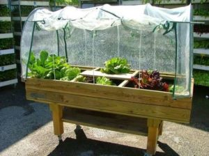

¿Qué es un invernadero?
Se entiende por invernadero un lugar cerrado, estático y accesible a pie, dotado habitualmente de una cubierta exterior translúcida de vidrio o de plástico, dentro del cual se puede obtener un microclima mediante el control de la temperatura, de la humedad y de otros factores ambientales, además, se pueden proporcionar sistemas automáticos de riesgo y ventilación, lo cual se utiliza para la producción y de cultivos de forma controlada.
Esto presenta una serie de beneficios tales como la precocidad en el crecimiento de los frutos, permitir la producción fuera de época, ahorro de agua y fertilizantes, facilitar el control de insectos y plagas, etc.
Los parámetros a control en un invernadero, y que intervienen directamente en el clima de un invernadero son:
Luz, Temperatura, Calefacción, Ventilación, Humedad.

Temperatura adecuada del invernadero.
La temperatura idónea en invernadero varía en función del cultivo y sus estadios, o etapas de desarrollo en las que se encuentre. Generalmente, la temperatura mínima requerida para las plantas de invernadero es de 10-15°C, mientras que 30°C podría ser la temperatura máxima.
Una variación o diferencia de temperatura de 5 – 7°C entre las termperaturas diurnas y nocturnas suele resultar beneficiosa para las plantas. La temperatura del suelo es incluso más importante que la temperatura del aire en un invernadero (Temperatura del suelo por debajo de 7°C, las raíces crecen más despacio y no absorben fácilmente el agua ni los nutrientes). Se debe conseguir un suelo templado, para que las semillas germinen y para se desarrollen los esquejes de raíces.
La temperatura ideal para la germinación de la mayoría de las semillas es 18-25°C. Resulta complicado regular las altas temperaturas en invernadero, sobre todo en verano. Por tanto, es conveniente disponer de un sistema de ventilación en la cubierta o contar con una malla de sombreo por fuera.
Humedad de invernaderos
Las humedades de la mayoría de las plantas prefieren una humedad relativa del aire entre el 45 y el 60%. Para su control se coloca sensores de humedad en el interior del invernadero (higrómetro). Humedades altas favorecen la transmisión de plagas y enfermedades, y las humedades bajas podrían secar la planta. La transpiración de las hojas aumenta la humedad de un invernadero. Si el grado de humedad es demasiado bajo, podemos elevarlo mojando el suelo o vaporizando las plantas de forma periódica.